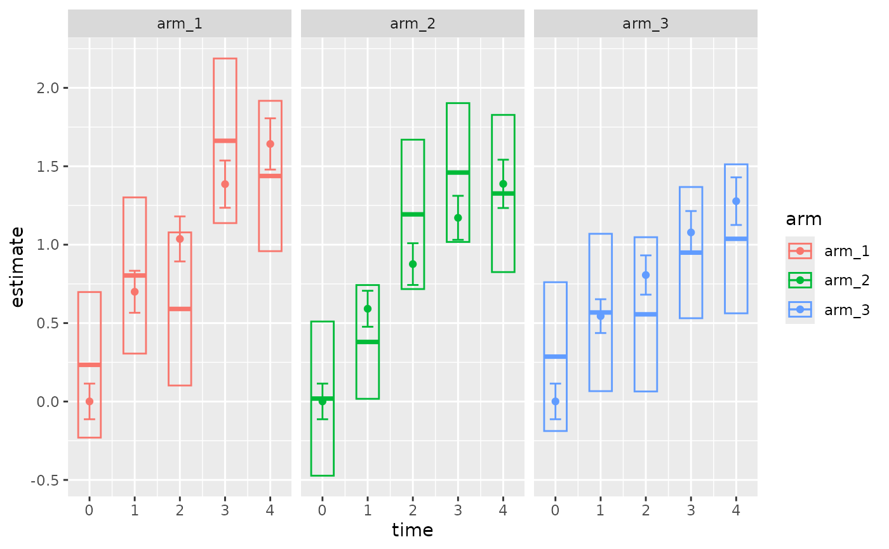

Plot a fitted progression model for repeated measures (PMRM) against the data.
Usage
# S3 method for class 'pmrm_fit'
plot(
x,
y = NULL,
...,
confidence = 0.95,
show_data = TRUE,
show_marginals = TRUE,
show_predictions = FALSE,
facet = TRUE,
alpha = 0.25
)Arguments
- x
A fitted model object of class
"pmrm_fit"returned by apmrmmodel-fitting function such aspmrm_model_decline().- y
Not used.
- ...
Not used.
- confidence
Numeric between 0 and 1, the confidence level to use in the 2-sided confidence intervals.
- show_data
TRUEto plot data-based visit-specific data means and confidence intervals as boxes.FALSEto omit.- show_marginals
TRUEto plot model-based confidence intervals and estimates of marginal means as boxes and horizontal lines within those boxes, respectively. Usespmrm_marginals()with the given level of confidence.FALSEto omit.- show_predictions
TRUEto plot expected outcomes and confidence bands with lines and shaded regions, respectively. Usespredict.pmrm_fit()withadjust = FALSEand the given level of confidence on the original dataset used to fit the model. Predictions on a full dataset are generally slow, so the default isFALSE.- facet
TRUEto facet the plot by study arm,FALSEto overlay everything in a single panel.- alpha
Numeric between 0 and 1, opacity level of the model-based confidence bands.
Details
The plot shows the following elements:
Raw estimates and confidence intervals on the data, as boxes (if
show_dataisTRUE).Model-based estimates and confidence intervals as points and error bars, respectively (if
show_marginalsisTRUE).Continuous model-based estimates and confidence bands as lines and shaded regions, respectively (if
show_predictionsisTRUE).
Examples
set.seed(0L)
simulation <- pmrm_simulate_decline(
visit_times = seq_len(5L) - 1,
gamma = c(1, 2)
)
fit <- pmrm_model_decline(
data = simulation,
outcome = "y",
time = "t",
patient = "patient",
visit = "visit",
arm = "arm",
covariates = ~ w_1 + w_2
)
plot(fit)
